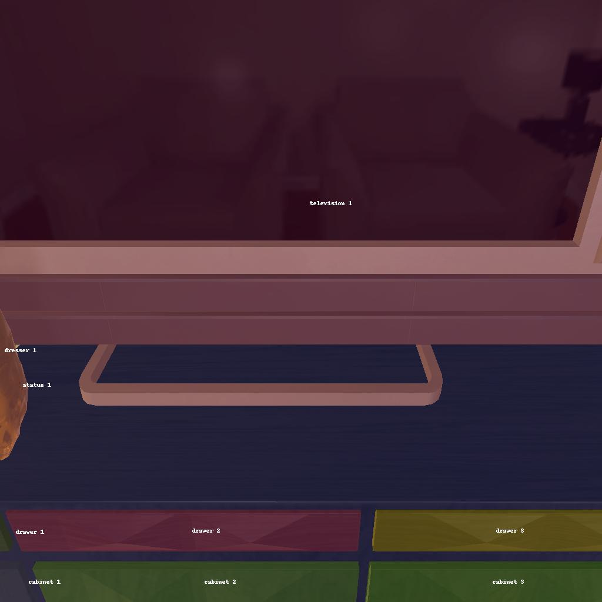

---------------------------------------------------------task: 7---------------------------------------------------------
--------------------------------------------------------------------------------------------------------------------------------------------------------------------
--------------------------------------------------------------------------------------------------------------------------------------------------------------------
Step:--------------------------------------------------------------------------10-------------------------------------------------------------------------------
----------------------------------------
VLM Prompt:
Image1:
Image2:
Image3:
**Instruction**
1. Analyze the provided image to identify all visible household objects, focusing on those relevant to the task description "put a creditcard in coffeetable."
2. Use the analysis of the image and the task hint "The agent must find an object of the desired type, pick it up, find the correct location to place it, and put it down there." to answer the question: what is the most reasonable action in the choices for the task description "put a creditcard in coffeetable"?
4. Decide and write the answer using the template: The answer is: (i): , where i is the real number. If there is no desired object in the image, search every place based on **Initial Observation** to find the object. And if no one is exactly correct, choose a similar answer.
**Initial Observation**
You are in the middle of a room. Looking quickly around you, you can see armchair (1-2), dresser (1), garbagecan (1), cabinet (1-4), drawer (1-4), coffeetable (1), sidetable (1), sofa (1)
**Answer Choices**
(1): go to armchair 1
(2): go to armchair 2
(3): go to garbagecan 1
(4): go to cabinet 1
(5): go to drawer 2
(6): go to cabinet 2
(7): go to drawer 3
(8): go to cabinet 3
(9): go to drawer 4
(10): go to cabinet 4
(11): go to coffeetable 1
(12): go to sidetable 1
(13): go to sofa 1
(14): take television 1 from dresser 1
(15): take statue 1 from dresser 1
**Answer**
Let's think step by step by following the instructions.
----------------------------------------
----------------------------------------
Original Response:
Firstly, we need to identify the credit card in the image. In Image2, we can see "creditcard 1" on the bottom left corner on the floor near "statue 1". Now, we need to find the coffeetable to complete the task "put a creditcard in coffeetable." In the initial observation, it's noted that there is a "coffeetable 1" in the room.
Since the task is to put a credit card on the coffee table, the most reasonable next action would be to first pick up the credit card. However, none of the answer choices provide an option to pick up the credit card. The closest relevant action that can be taken is to go to the location of the credit card, which would be near "statue 1" on the dresser. But again, there is no direct answer choice for this action. The closest action that involves going towards the dresser (and therefore towards the credit card) is:
The answer is: (5): go to drawer 2.
This action would bring the agent closer to the credit card, which is the first step in completing the task of putting it on the coffee table.
----------------------------------------
----------------------------------------
>>> Refine Original VLM Response and Get Pure Action: go to drawer 2
----------------------------------------
-----------------------------------------------------------------
Running time: 11.478785514831543 seconds
Total Money: 4.011829999999999
-----------------------------------------------------------------
-----------------------------------------------------------------
Text Observation:You arrive at loc 6. The drawer 2 is closed.
-----------------------------------------------------------------
UNSUCCEED